(When) is seeing believing?
What earth observation resolves
and complicates for environmental economics
When is seeing believing?
Motivating example: Pollution levels

Fine particulate matter (PM2.5) predictions for July 2002 from four research groups (at 1 km2)
When is seeing believing?
Motivating example: Pollution damages
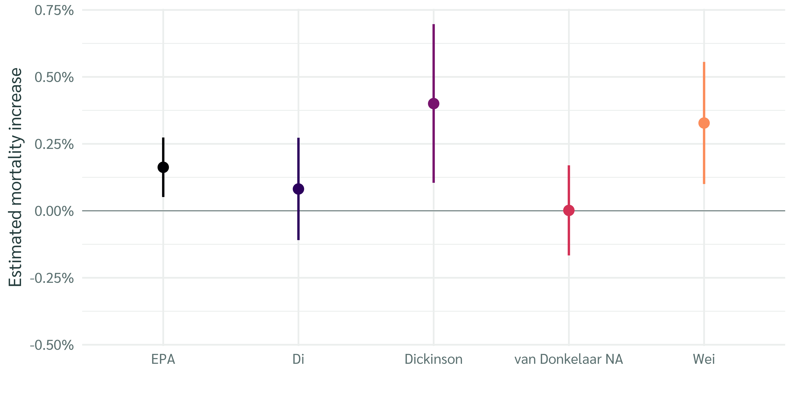
Implied cardio. mortality from PM2.5 from EPA monitors and four separate research groups (pct. increase in cardio. mortality from 1 µg/m3)
When is seeing believing?
Motivating example: Pollution damages
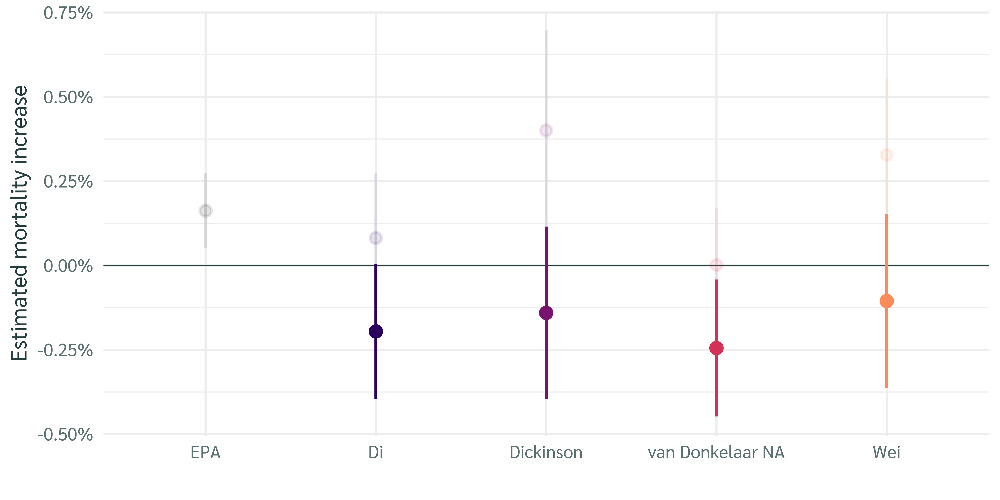
Estimated damages change farther from ground-truth data, complicating our inferences
Remote sensing + environmental economics
Changes
Remote sensing1 is changing the way we “do” enviro economics
- what we can measure,
- where/when we can measure it,
- how2 we measure it.
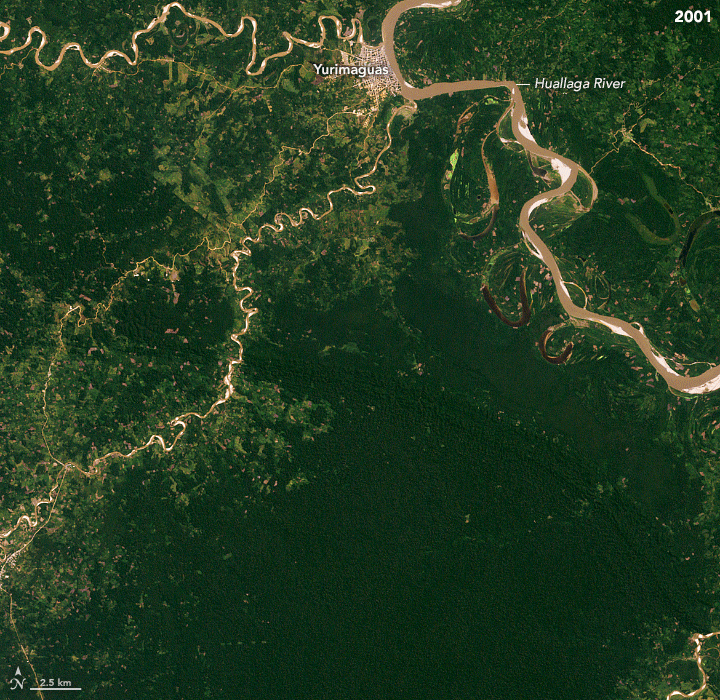
The promise
Learning from new measurements
Remote sensing has helped solve
first-order measurement problems
- out-of-reach variables,
- in inaccessible areas,
- with immense spatiotemporal coverage,1
- validating potentially manipulated data.
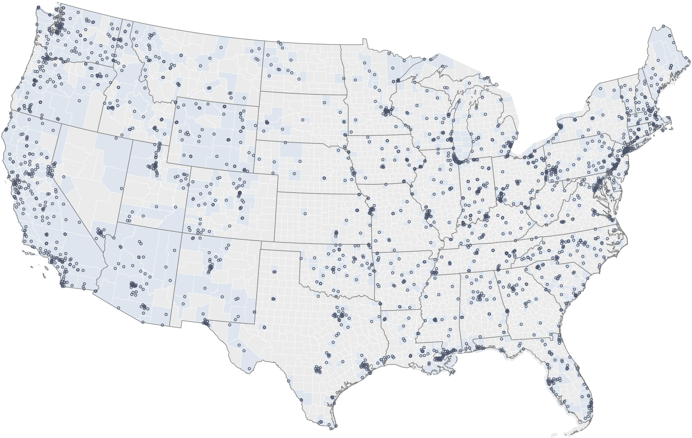

The challenge
Errors, uncertainty, and causal inference.
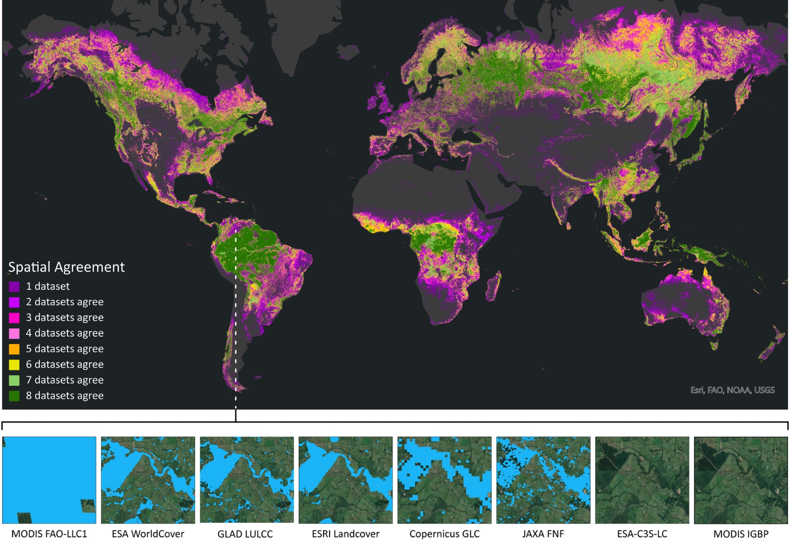
Where’s the forest? Disagreement in forest cover across eight remote-sensing products, Castle et al. (2026)
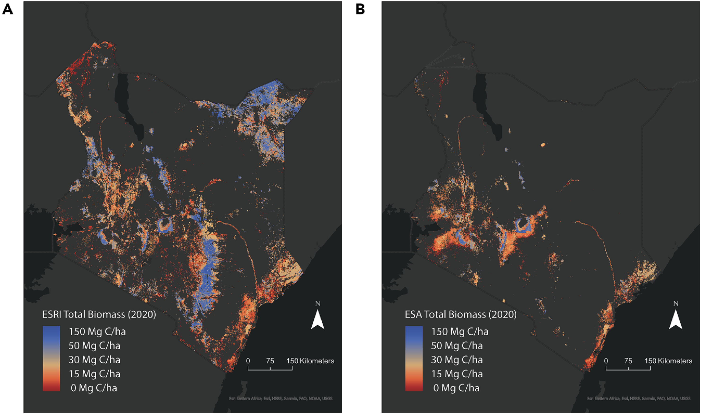
Disagreement in biomass between 2 remote-sensing products for Kenya (ESRI vs. ESA), Castle et al. (2026)
My thesis
Measurement has improved. Critical questions remain.
(Reminds me f current conversations around AI/LLMs.)
Today
Overview
Overall, I hope to provide a 10,000-foot picture of
- what’s working: what we’re learning from remote sensing projects;
- what’s not working: concerns with current approaches, promising paths forward, and room for future innovation;
- a false dilemma: roles for remote sensing data and “conventional” data.
Where is remote sensing offering new insights?
Everywhere.
Remote sensing
Examples
Just a few examples of recent applications
↳ Measuring environmental quality
↳ air/water/soil quality, weather/climate, groundwater, invasive species
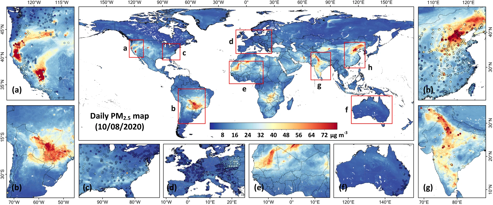
Global, daily 1 km2 PM2.5, Wei et al. (2023)
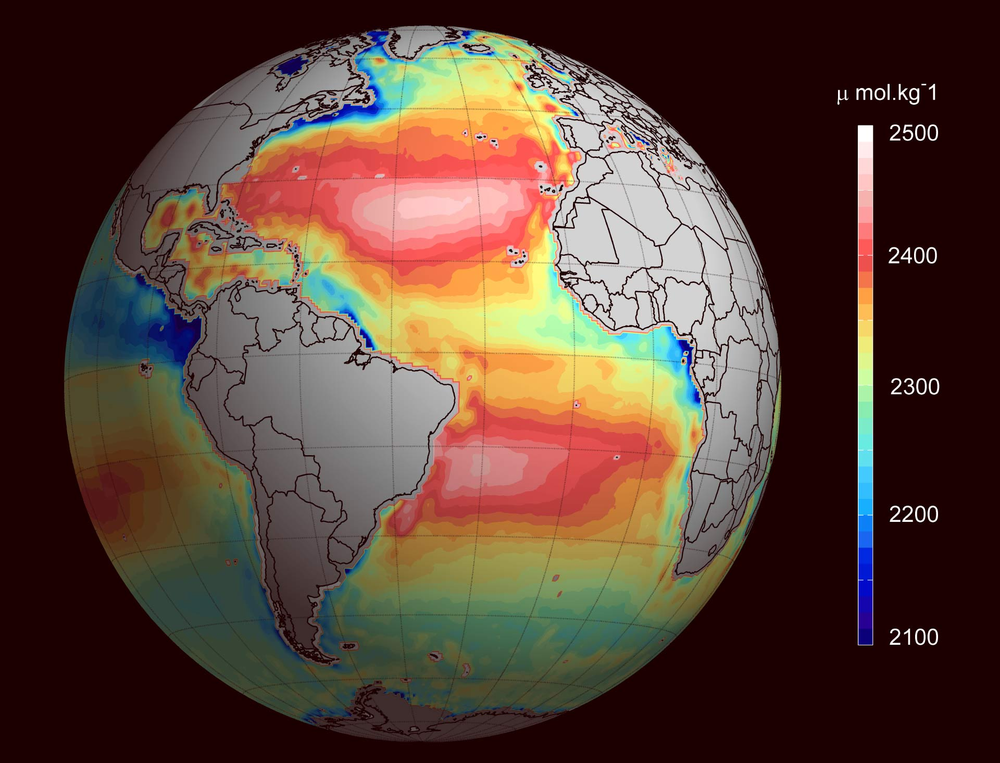
Seawater alkalinity, Land et al. (2015) and ESA

Land and sea surface temperatures, ESA
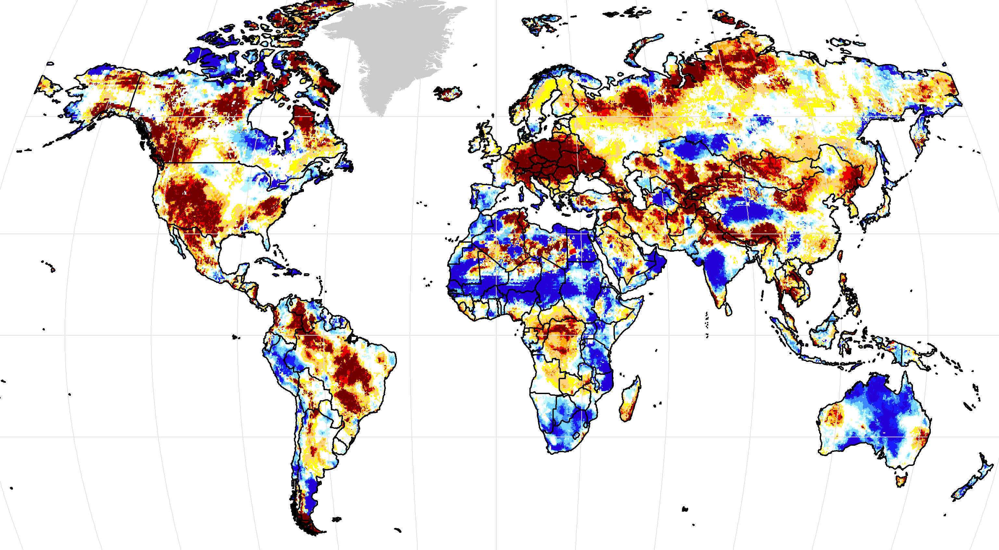
Shallow-groundwater drought indicator, NASA JPL GRACE
Remote sensing
Examples—and why they matter
Just a few examples of recent applications
↳ Measuring environmental quality
↳ air/water/soil quality, weather/climate, groundwater, invasive species
↳ Measuring land/resource use, land cover, and development
↳ nighttime lights, urban growth, land cover (change), wealth estimates

Change in nighttime lights in Europe, 1992–2010, ESA
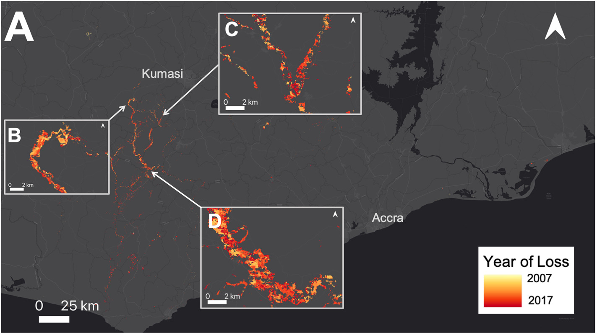
Forest loss from gold mining in Ghana, Barenblitt et al. (2021)
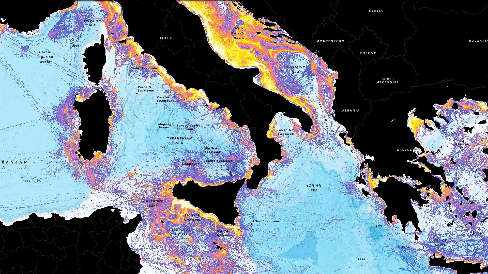
Fishing intensity around Italy, Global Fishing Watch
Remote sensing
Examples—and why they matter
Just a few examples of recent applications
↳ Measuring environmental quality
↳ air/water/soil quality, weather/climate, groundwater, invasive species
↳ Measuring land/resource use, land cover, and development
↳ nighttime lights, urban growth, land cover (change), wealth estimates
↳ Auditing behavior
↳ mining, deforestation, fishing, land-use, even in situ monitoring
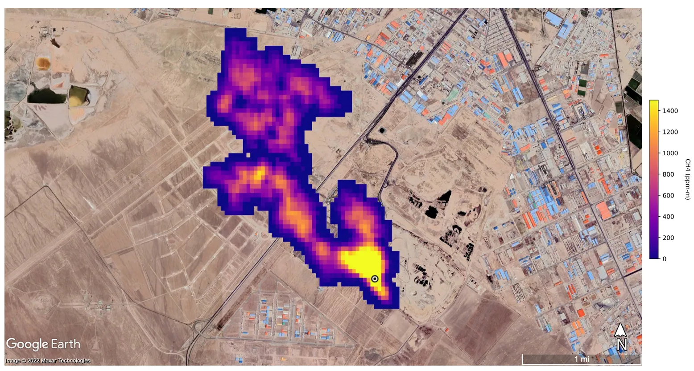
Methane emissions near Tehran, Iran, NASA EMIT (2022)
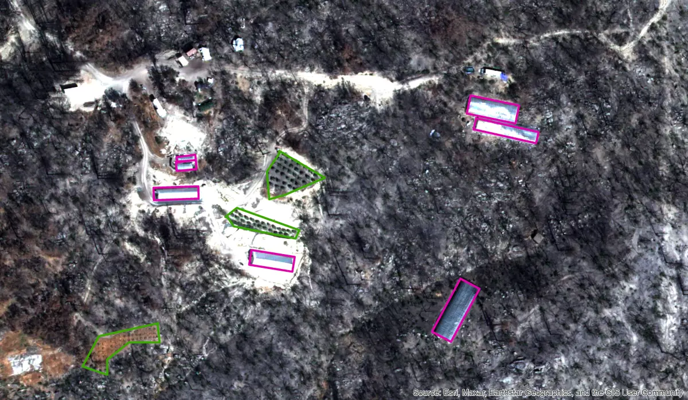
Illegal Cannabis farms, LA Times (2022)

Spatiotemporal footprints of artisanal gold mining in protected forest in Indonesia, Lukman (2025)
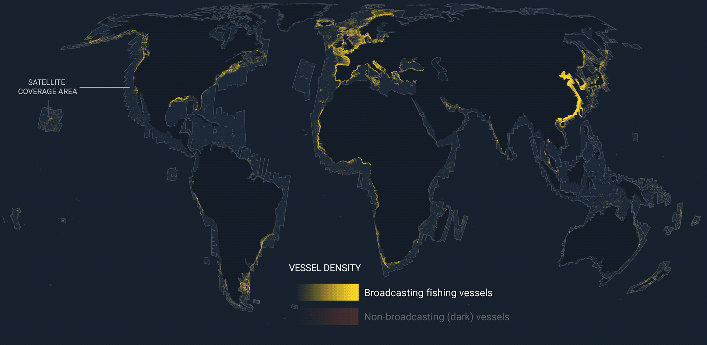
The “Dark Fleet”, Global Fishing Watch and untracked fishing vessels
(A new application of “nighttime lights”!)
Remote sensing
Examples—and why they matter
Just a few examples of recent applications
↳ Measuring environmental quality
↳ air/water/soil quality, weather/climate, groundwater, invasive species
↳ Measuring land/resource use, land cover, and development
↳ nighttime lights, urban growth, land cover (change), wealth estimates
↳ Auditing behavior
↳ mining, deforestation, fishing, land-use, even in situ monitoring
↳ Natural disasters
↳ smoke plumes, wildfires, flood damage, hurricane impacts
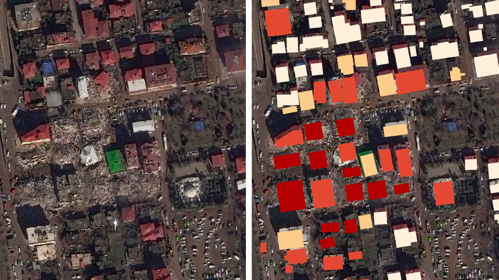
Detecting earthquake damage in Islahiye, Turkey with xView2
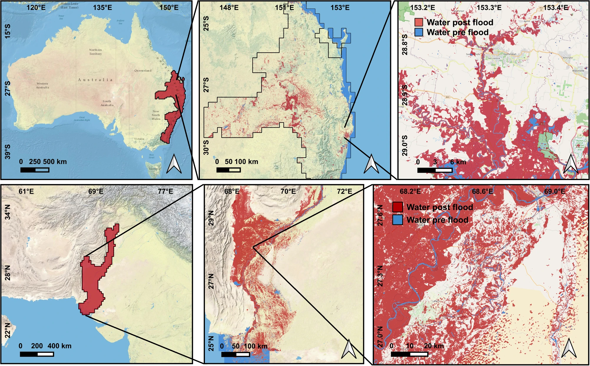
Detecting flood extents in Australia and Pakistan, Portalés-Julià et al. (2023)
CO emissions from Canadian wildfires, June 2023 (NASA)
Remote sensing has been around a little while…
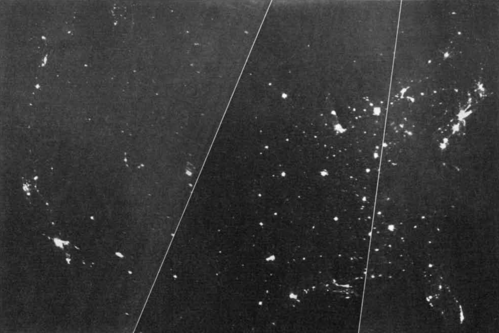
Nighttime lights in the 1970s, Clark (1978)
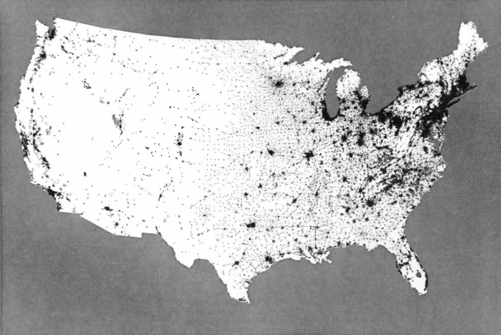
Population in the 1970s, Clark (1978)

Early measurement challenges: Development or gas flaring? Landsat 1, Clark (1978)

Even earlier: US gov’t surveyed 90+% of agricultural land via aerial photography 1938–1947

Even earlier: US gov’t surveyed 90+% of agricultural land via aerial photography 1938–1947

… and now today (here: Google Earth)

A bit closer yet (still Google Earth)

How good is good enough? Satellite-based detection of mines, Maus et al. (2022) and GRU
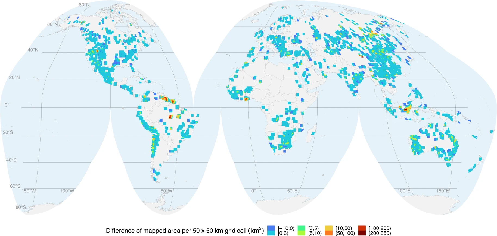
Zooming back out: How good is good enough? Global mining area added between v1 (2020) and v2 (2022) of Maus et al.
The challenges
What’s next
Remote sensing
makes big contributions for measurement and holds a lot of promise;1
presents new measurement challenges for environmental economics.
Donaldson and Storeygard (2016):
Overall, it is essential for economists using remote sensing data to understand, and be skeptical of, the data and assumptions underlying them.
We still need to think about selection/endogeneity, mismeasurement, strategic responses, validation data, …
When is seeing believing?
Measurement and mismeasurement
Measurement error is not new to economics (or statistics).1
Yet, remote sensing (RS) adds new elements to consider.
- most RS data are processed; (raw data present their own challenges);
- RS products are often predictions from models that combine satellite imagery with other features;
- training/validation data are typically from selected/endogenous samples;
- actors may strategically respond to RS data (and its errors).
⇒ concerns for identification, inference, and application.
Challenge #1: Measurement error
\(\hat{x}\) vs. \(x\)
Remotely sensed variables have error.
Current lit might acknowledge this issue—but rarely addresses it.
- data products created without causal inference in mind;
- likely not classical measurement error;
- ⇒ biased point estimates and/or inference;
Potential solutions:1
- training/validation should match use case;
- use ground-truth/validation data to debias causal inference.
Donaldson and Storeygard (2016)
… it is important to recognize that the types of errors that would seriously jeopardize a typical economic application of remotely sensed data are not always a main concern of the remote sensing community.
Measurement error refresh
Setup
Observed value differs from the true value due to some measurement error \[\textcolor{#6a5acd}{x_\text{obs}} = \textcolor{#ffa500}{\alpha_0} + \textcolor{#ffa500}{\alpha_1} \textcolor{#e64173}{x_\text{true}} + \textcolor{#ffa500}{\epsilon}\]
Measurement error refresh
Setup
Observed value differs from the true value due to some measurement error \[\textcolor{#6a5acd}{x_\text{obs}} = \textcolor{#ffa50040}{\alpha_0} \textcolor{#0000001A}{+} \textcolor{#ffa50040}{\alpha_1} \textcolor{#e64173}{x_\text{true}} + \textcolor{#ffa500}{\epsilon}\]
Papers frequently invoke attenuation bias from classical measurement error
- \(\textcolor{#6a5acd}{x_\text{obs}}\) is an unbiased1 estimate of \(\textcolor{#e64173}{x_\text{true}}\),
- \(\textcolor{#ffa500}{\epsilon}\) is independent of \(\textcolor{#e64173}{x_\text{true}}\),
- \(\textcolor{#ffa500}{\epsilon}\) is independent of any other variables of interest (outcomes or regressors).
Unfortunately, RS likely generates non-classical measurement error.
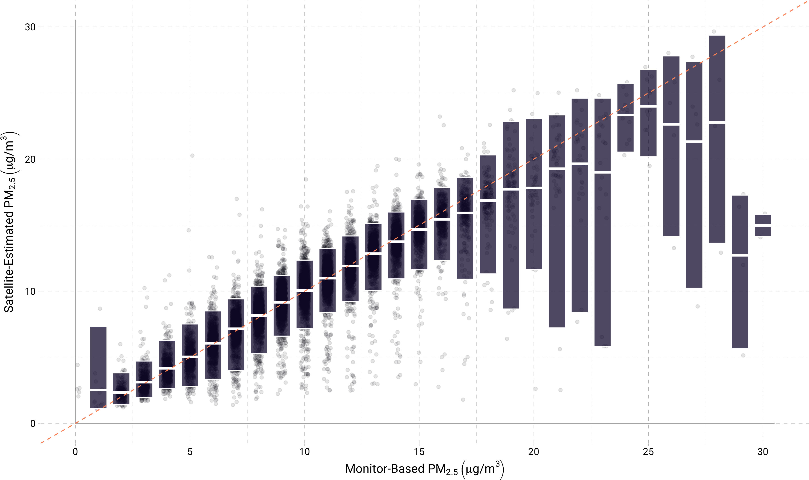
Mean-reverting measurement error: Monitored PM2.5 vs. predictions from Di et al. (2016), Fowlie, Rubin, and Walker (2019)
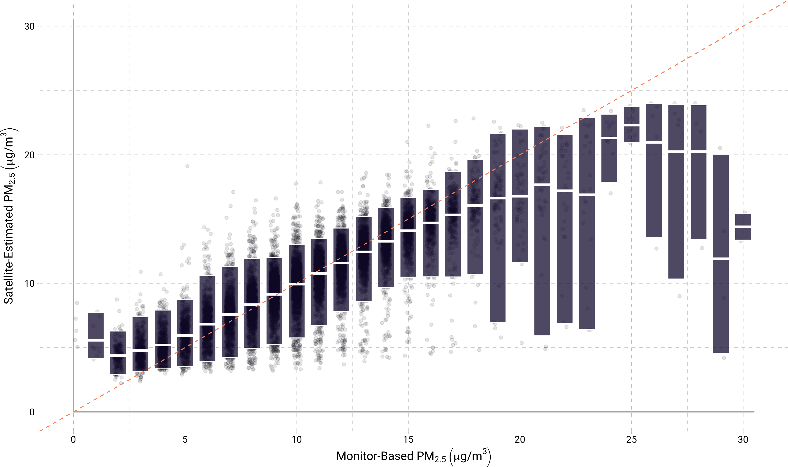
Mean-reverting measurement error: Monitored PM2.5 vs. predictions (NA) from vD et al. (2019), Fowlie, Rubin, and Walker (2019)
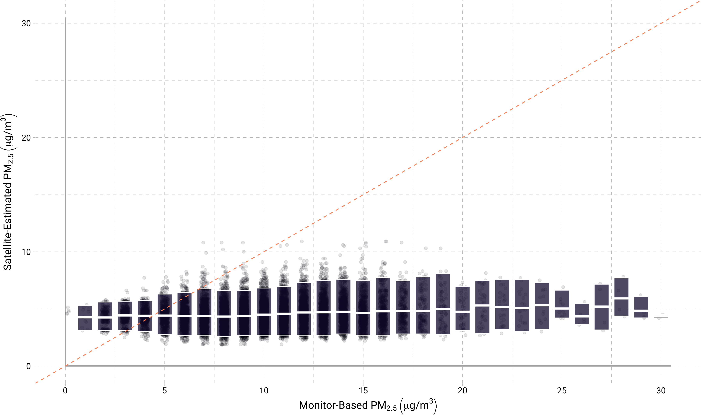
Mean-reverting measurement error: Monitored PM2.5 vs. predictions (Global) from vD et al. (2019), Fowlie, Rubin, and Walker (2019)
Measurement error
In remotely sensed variables
If \(\textcolor{#6a5acd}{x_\text{obs}}\) results from a prediction or calibration algorithm
e.g., pollution, income, temp.
- we often have mean-reverted predictions,
- overpredicting low values and underpredicting high values,
\[\textcolor{#6a5acd}{x_\text{obs}} = \textcolor{#ffa500}{\alpha_0} \textcolor{#000000}{+} \textcolor{#ffa500}{\alpha_1} \textcolor{#e64173}{x_\text{true}} + \textcolor{#ffa500}{\epsilon}\]
where \(\textcolor{#ffa500}{\alpha_0} > 0\) and \(0 < \textcolor{#ffa500}{\alpha_1} < 1\). ⇒ No guarantee of attenuation bias.1
Categorical/binned variables face a similar problem: Errors correlate with truth.
Measurement error
In remotely sensed variables
Recent work suggests a more prevalent and pernicious type of measurement error1 common to remotely sensed variables.
Differential measurement error
\(y = \beta_0 + \beta_1 \textcolor{#6a5acd}{x_\text{obs}} + \textcolor{#7cae96}{u} \quad\quad\quad\) model of interest
\(\textcolor{#6a5acd}{x_\text{obs}} = \textcolor{#ffa500}{\alpha_0} + \textcolor{#ffa500}{\alpha_1} \textcolor{#e64173}{x_\text{true}} + \textcolor{#ffa500}{\epsilon} \quad\quad\quad\) measurement error
and \(\textcolor{#ffa500}{\epsilon}\) correlates with \(\textcolor{#7cae96}{u}\).
I.e., error correlates with other factors that correlate with the outcome...
… endogenous measurement error.
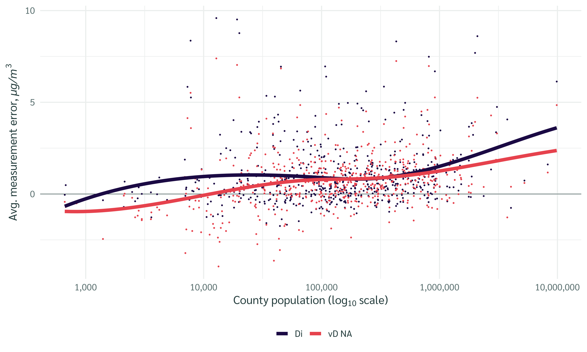
Differential measurement error: Counties’ mean pred. error for PM2.5 and population, Di et al. (2019) and van Donkelaar et al. (2024)
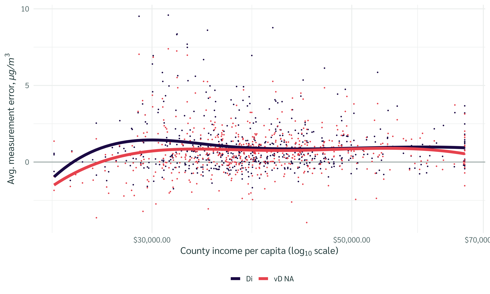
Differential measurement error: Counties’ mean pred. error for PM2.5 and income pc, Di et al. (2019) and van Donkelaar et al. (2024)
So what?
Measurement error
So what?
Promise Remote sensing can change
what/how we understand the environment, economics, and policy...
Concern …but, non-classical measurement error may significantly
impair our ability to learn anything from RS data.
- point estimates: bias need not attenuate toward zero.1
- inference: confidence interval coverage can plummet.
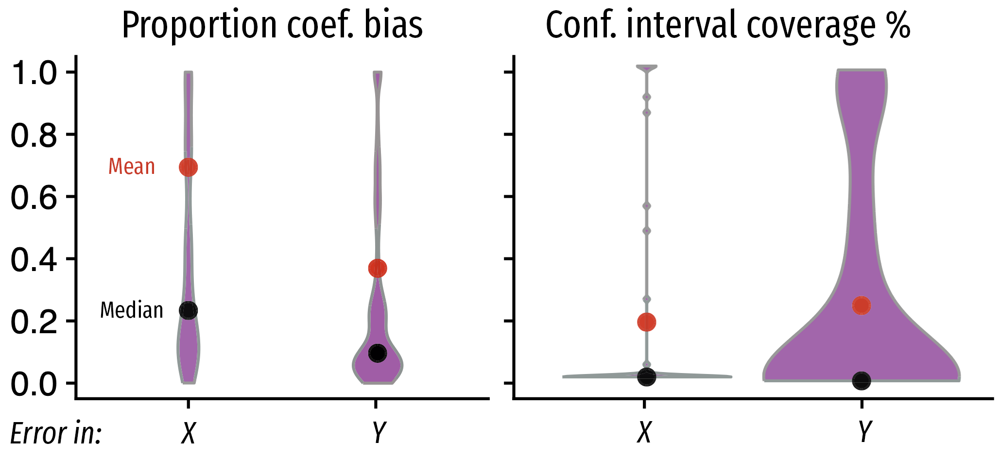
Coef. bias and conf. interval coverage issues, adapted from Proctor, Carleton, and Sum (2026)
Measurement error
So what?
Promise Remote sensing can change
what/how we understand the environment, economics, and policy…
Concern …but, non-classical measurement error may significantly
impair our ability to learn anything from RS data.
- point estimates: bias need not attenuate toward zero.1
- inference: confidence interval coverage can plummet.
- heterogeneity: does het. reflect het. trt. effects or het. meas. error?
- policy ranking: maps differ on areas w/ highest damages, benefits, …
Measurement error
Evidence so far
The problem is not “satellites are noisy.”
The problem is that the noise is structured in economically meaningful ways.
- Systematic parameter bias: Proctor, Carleton, and Sum show remotely sensed variables often fail to recover the target parameter.
- Treatment-correlated error: Alix-García and Millimet show forest measures can generate nonclassical bias in PES estimates.
- Binning/classification error: Carson and Yu; Wardle show discretization and misclassification can distort climate, crop, and land-use estimates.1
So what do we do?
Measurement error
What fixes have in common
Emerging solutions generally share an architecture
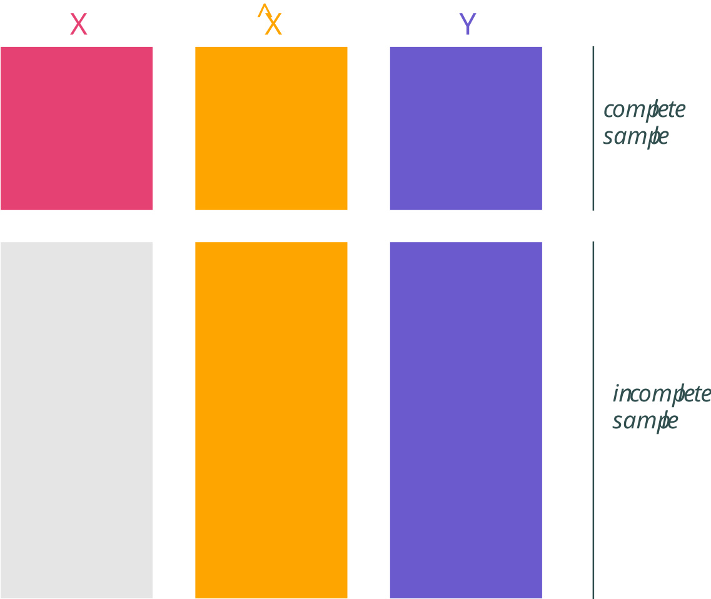
For small ground-truth sample:
we observe \(\textcolor{#6a5acd}{\text{Y}}\) and \(\textcolor{#e64173}{\text{X}}\).
Unbiased, high-variance estimates.
For large RS sample:
we observe \(\textcolor{#6a5acd}{\text{Y}}\) and \(\textcolor{#ffa500}{\hat{\text{X}}}\)
Biased, low-variance estimates.
Measurement error
What fixes have in common
Emerging solutions generally share an architecture
However, there’s more to learn.
Comparing \(\textcolor{#ffa500}{\hat{\text{X}}}\) to \(\textcolor{#e64173}{\text{X}}\) reveals patterns in measurement error.
E.g., Multiple imputation from Proctor, Carleton, and Sum learns \(\textcolor{#e64173}{\text{X}} = f(\textcolor{#ffa500}{\hat{\text{X}}},\, \textcolor{#6a5acd}{\text{Y}})\), “correcting” \(\textcolor{#ffa500}{\hat{\text{X}}}\).
Sanford et al.’s adversarial debiasing presents a somewhat related approach.
Measurement error
What fixes have in common
Emerging solutions generally share an architecture
However, there’s more to learn.
Comparing \(\textcolor{#6a5acd}{\text{Y}} \sim \textcolor{#ffa500}{\hat{\text{X}}}\) to \(\textcolor{#6a5acd}{\text{Y}} \sim \textcolor{#e64173}{\text{X}}\) reveals patterns in parameter-estimate bias.
E.g., prediction-powered-inference and predict-then-debias.
(Angelopoulos et al. and Kluger et al.)
Measurement error
What fixes have in common
Emerging solutions generally share an architecture
Broadly, these solutions
- learn error behavior
from validation data; - correct predictions/estimates;
- propagate uncertainty.
… requiring validation data are
- high-quality;
- independent of predictions;
- representative of RS sample.
Back to our example: PM2.5 mortality near regulatory monitors
Naïve results, full sample
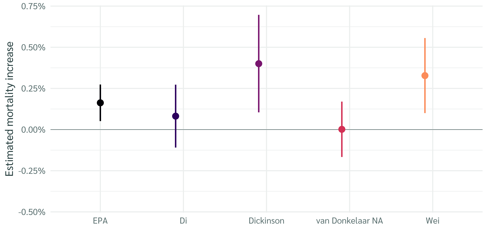
Implied cardio. mortality from PM2.5 from EPA monitors and four separate research groups (pct. increase in cardio. mortality from 1 µg/m3)
Back to our example: PM2.5 mortality near regulatory monitors
PTD results, full sample
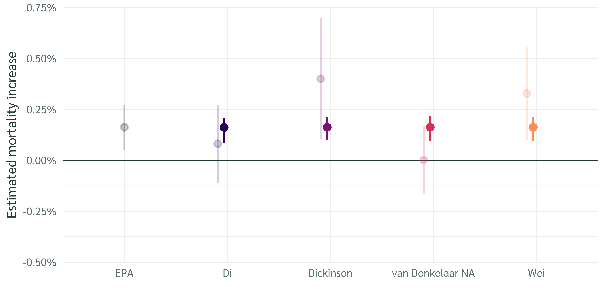
Implied cardio. mortality from PM2.5 from EPA monitors and four separate research groups (pct. increase in cardio. mortality from 1 µg/m3)
Back to our example: PM2.5 mortality near regulatory monitors
Naïve results, far-from-monitor sample
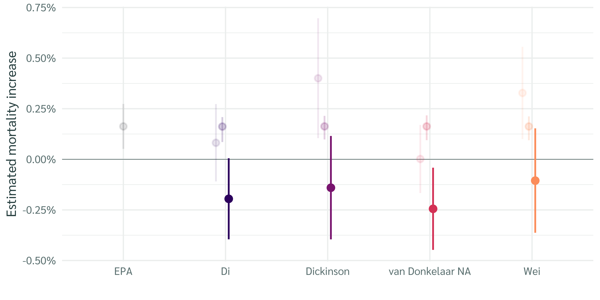
Implied cardio. mortality from PM2.5 from EPA monitors and four separate research groups (pct. increase in cardio. mortality from 1 µg/m3)
Back to our example: PM2.5 mortality near regulatory monitors
PTD results, far-from-monitor sample
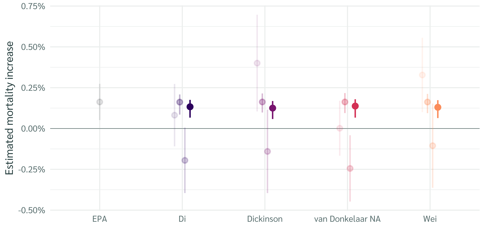
Implied cardio. mortality from PM2.5 from EPA monitors and four separate research groups (pct. increase in cardio. mortality from 1 µg/m3)
Challenge #2: Validation data
A common false dilemma
RS data are often pitched as an alternative to “traditional” data.
Yet, RS-based causal inference relies on (traditional) ground-truth data.
- part of training/calibration/prediction;
- part of RS validation/quality control;
- central to meas.-error solutions.
Challenge Ground-truth data often rely on endog. monitor infrastructures.
- selection into validation data ⇒ potential downstream bias; (\(-\) ext. validity)
- RS training/validation approaches often don’t match econ applications;
- strategic responses to observation further “complicate things.”
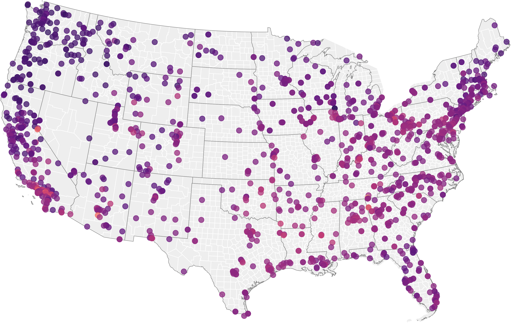
Example: Location of US EPA regulatory PM2.5 monitors (ground-truth), Dickinson and Rubin

Example: Predicted PM2.5 monitor likelihood ML model using RS features, Dickinson and Rubin
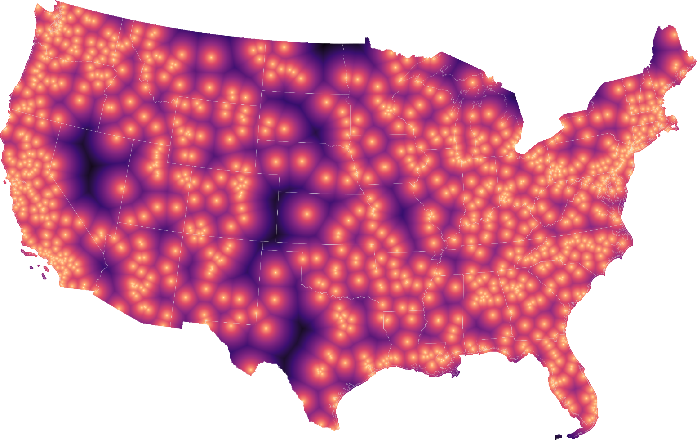
Example: Distance to nearest PM2.5 monitor, Dickinson and Rubin
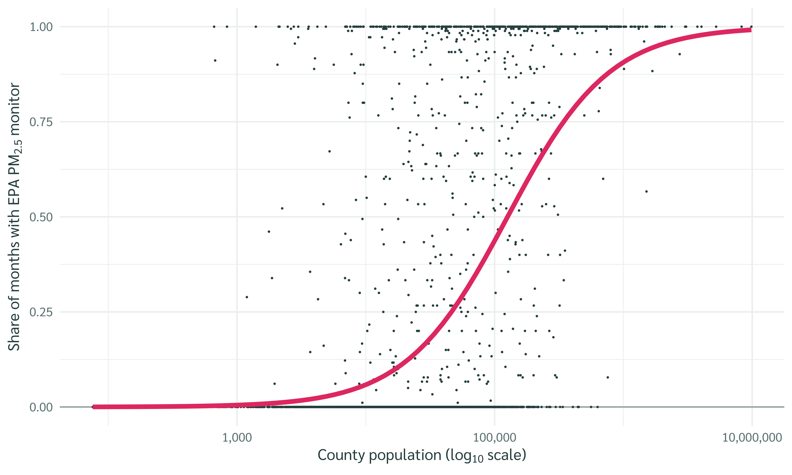
Non-random monitoring: Counties’ share of months with PM2.5 monitors and county population, author’s calculations
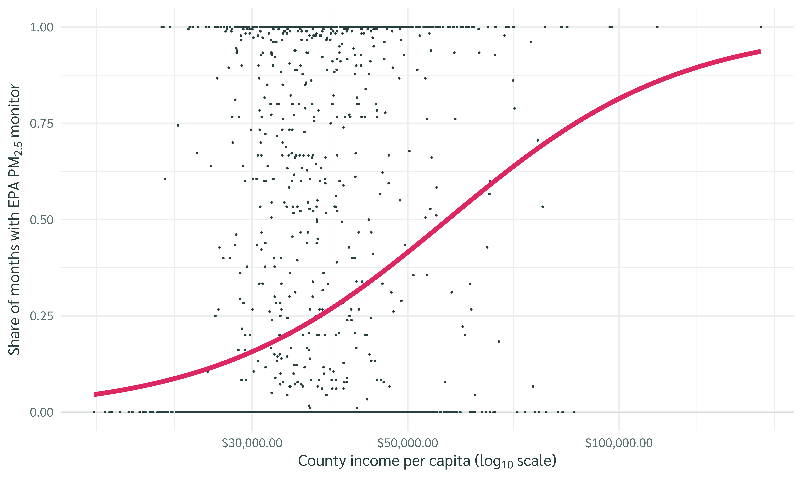
Non-random monitoring: Counties’ share of months with PM2.5 monitors and income pc, author’s calculations
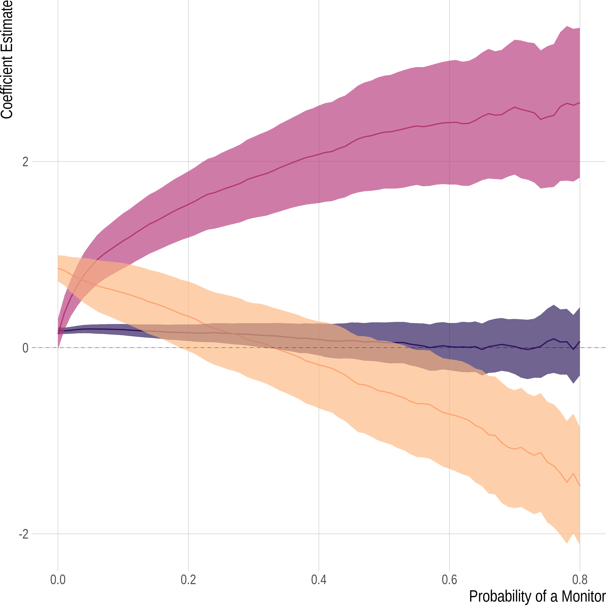
Selection-correction can change results
y-axis:
coefficient from regressing predicted PM2.5 on demog. pctl. (Black, Hispanic, White)
(includes tract and rural FEs)
x-axis:
cutoff for monitor selection (sample ≥ x)
There’s lots of work to do on this concern…
Potential starting place: Area of applicability. (Meyer and Pebesma, 2021)
↳ Restrict sample to locations where RS model has seen
↳ similar observations in importance-weighted feature space.
Validation issues
Poor upstream/downstream match
Related problem: We commonly face RS data mismatches
- upstream: calibration, training, and validation; (data generation)
- downstream: econometric/policy applications; (data use)
Downstream use should inform upstream modeling.
↳ We don’t train forecasting models on cross-sectional data.
↳ We shouldn’t spatially extrapolate using models built for interpolation.
However, we often implicitly do these things when using remotely sensed data.
↳ RS data producers often don’t have causal inf. in mind.
↳ There aren’t one-size-fits-all datasets… data generation \(\neq\) data application.
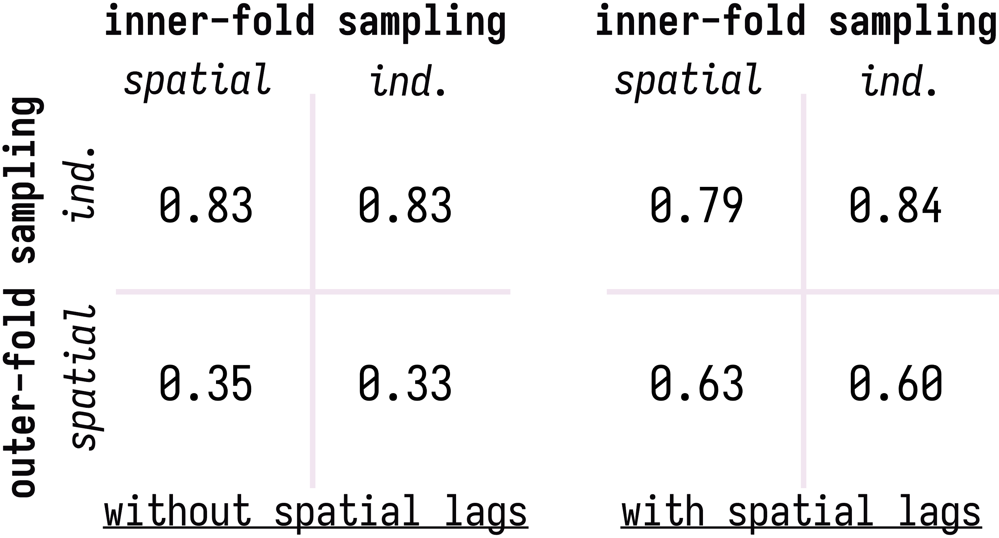
Advertised performance: R2 = 0.84
↳ “standard cross validation” randomly samples from the panel;
↳ i.e., ignores spatial/temporal/clustered correlations.
Spatial cross-validation performance: R2 = 0.63
↳ models struggle to predict into new spatial locations…
↳ even when they get spatial lags.
Spatial cross-validation performance without spatial lags: R2 = 0.35
↳ spatial lags take advantage of spatial correlations…
↳ also let data leak from training to testing folds.
ML models are struggling in space: R2 ~ 0.34 (< .84)
↳ Whether we train with spatial or “standard” CV, ML models are struggling
↳ to predict at new spatial locations.
↳ We aren’t learning as much as we think we are where we want to learn.
↳ More spatially explicit learners may be needed…
Related: Boser (2024) shows
- high total R2 is achievable (.72),
- even when spatial R2 is quite low (.09).
“Pooled” R2 also rewards explained temporal variation (R2 ≈ .83).
(Akin to Simpson’s paradox.)
Related: Fixed effects can absorb a lot of variation in such predictions.
Validation issues
Solutions
Solution1: Collaborate! Get involved upstream.
Donaldson and Storeygard (2016)
Increased communication, and in some cases active collaboration, between economists and remote sensing scientists will be important in ensuring that the next wave of this kind of economics research is fruitful.
I don’t think we’re doing a terrific job on this dimension.
Solution2: Build data for your context and keep the project open source!1
What about strategy?
Detection
Remote sensing offers new opportunities to monitor behavior…
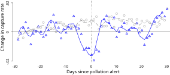
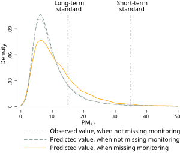
Imputing missed monitor observations with remote sensing for “interesting” monitors; Mu, Rubin, and Zou (2024)
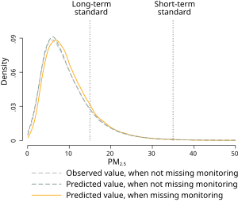
Imputing missed monitor observations with remote sensing for “non-interesting” monitors; Mu, Rubin, and Zou (2024)
… but don’t forget Goodhart’s Law/Lucas’s critique…
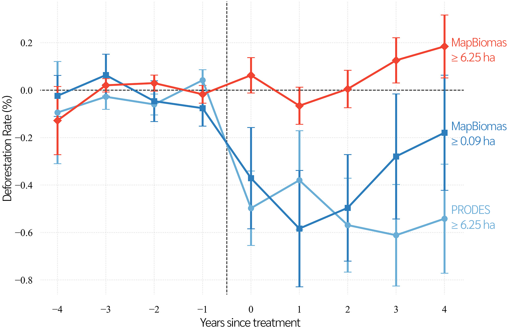
A strategic deforestation scale response to satellite resolution and policy, Baragwanath and Shinde (2025)
What about strategy?
Goodhart and Lucas
… but don’t forget Goodhart’s Law/Lucas’s critique…
- deforestation scaled to avoid visible detection, (Baragwanath, Shinde; 2025)
- crop-residual burning timing to avoid satellites, (Dasgupta; 2025)
- monitor shutdowns around high-pollution forecasts. (Mu, Rubin, Zou; 2025)
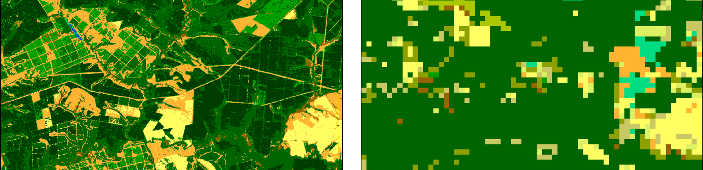
Land-cover classification at 10m and 300m resolutions, ESA
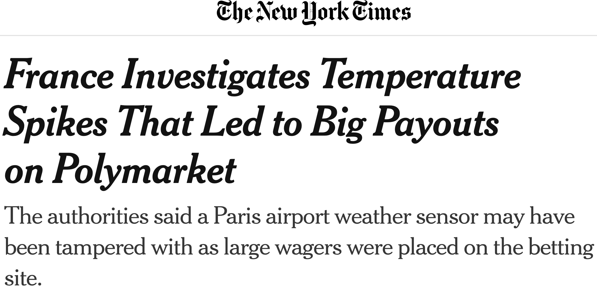
Other issues
Recovering the model or the effect?
Related: What if prediction models train on features that we want to test?
E.g., Most PM predictions use road density: PM = g(roads, …).
What if you then regress predicted PM on road construction?
Target relationship
RS relationship
\(\implies\)
PM = \(\beta\) roads + u
PM = \(\beta^{r}\) roads + v
g(roads, …) = \(\beta^{r}\) roads + v
roads’ linearized PM effects
…
linear approx. ML model
This concern grows as RS products increasingly use encodings from foundation models, which train/finetune on vast amounts of data.
Additional directions
Combining models
There are opportunities to combine RS with other modeling approaches.
Coupling RS, ML, & physical models
- combines approaches’ strengths,
- allows for source attribution,
- may complicate inference.
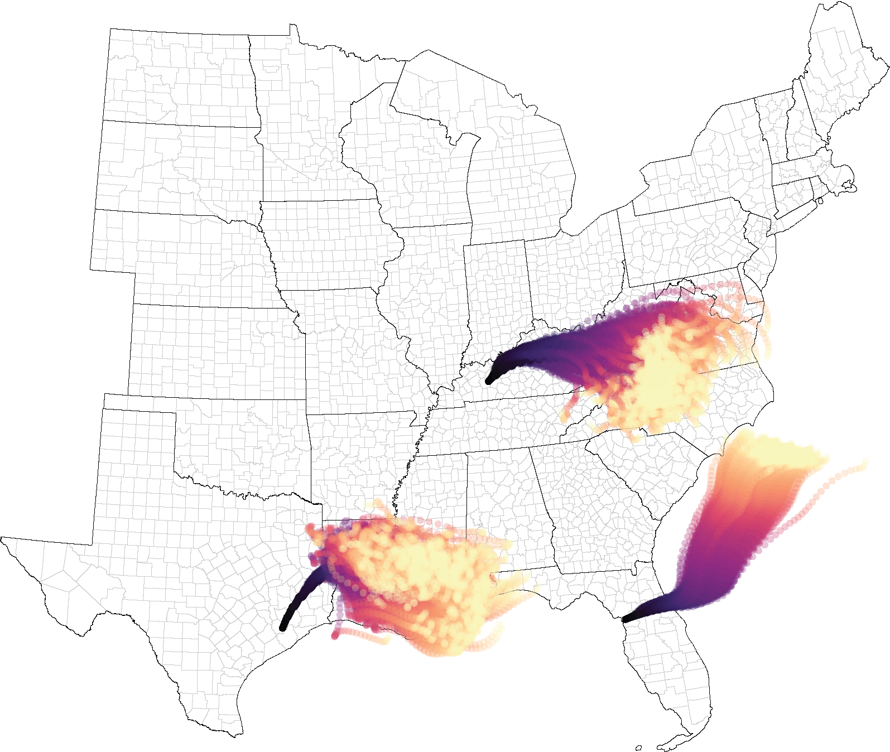
Summary
Where are we?
Remote sensing changed what is possible for enviro. economics…
- previously unobserveable variables,
- coverage where conventional data are sparse,
- tools to monitor hidden or strategic behavior.
… but seeing is not the same as identifying.
- predicted variables rather than precise measurements;
- selection into ground truth;
- still relies upon conventional (endogenous) monitoring systems.
The next frontier is not just more/better pixels.
↳ improve identification/inference, validation, and monitoring infrastructure.
Conclusion
Where are we going?
Building a remote-sensing audit…
Source
s
Error
s
Ground truth
s
Strategy
s
Where did the RS measurements originate?
↳ original source/goals, training, validation, …
How does error arise in the RS measurements?
↳ how will error propogate through causal inf. models?
How good are the ground-truth data?
↳ quality, completeness, generalizability
Which strategic responses should we anticipate?
↳ monitoring, policy, enforcement
Thank you!
Ed Rubin
↳ edwardr@uoregon.edu
↳ edrub.in